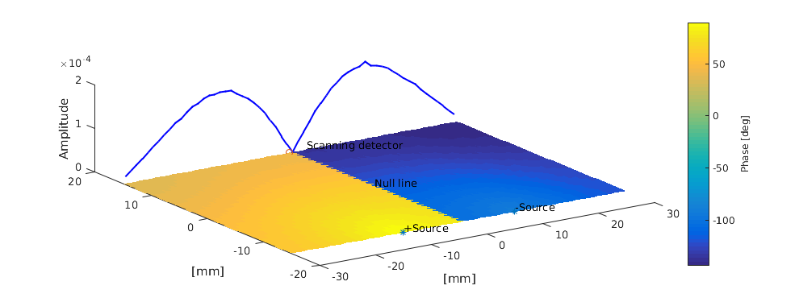
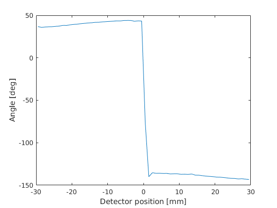

Frequency domain calculation: frequency.m
This example demonstrates how to simulate sinusoidal irradiance-modulated light and resembles that given in the book by [Wang], p. 259. Two light sources, 180 degree out of phase, are set up at the x-axis at equal distance from the origin. Due to the symmetry of the problem, the photon packets have an opposite phase at the y axis and the photon density has a minimum.
[Wang] Biomedical Optics Principles and Imaging, Wiley, 2007
Contents
Setup the simulation domain
clear all; xsize = 60; % width of the region [mm] ysize = 30; % height of the region [mm] dh = 1; % discretisation size [mm] vmcmesh = createRectangularMesh(xsize, ysize, dh); % Search positions for the light sources in the walls lightsource1 = findBoundaries(vmcmesh, 'location', [-10 -15]); lightsource2 = findBoundaries(vmcmesh, 'location', [10 -15]); % Obtain the indices of the opposite wall for plotting the results opposite_wall = findBoundaries(vmcmesh, 'direction', [0 0], [0 60], 59); wall = findBoundaries(vmcmesh, 'direction', [0 0], [0 -60], 59); vmcboundary = createBoundary(vmcmesh); vmcmedium.absorption_coefficient = 0.01; % absorption coefficient [1/mm] vmcmedium.scattering_coefficient = 1.0; % scattering coefficient [1/mm] vmcmedium.scattering_anisotropy = 0.0; % anisotropy parameter g of % the Heneye-Greenstein scattering % phase function [unitless] vmcmedium.refractive_index = 1.37; % refractive index [unitless] % Increase the default photon count to get reasonable statistics % at the detector options.photon_count = 3e7;
Run the simulations
Two simulations are used to simulate two modified lightsources. The solutions are added together to form the complete solution.
options.frequency = 200e6;
options.phase0=-pi/2;
vmcboundary.lightsource(lightsource1) = {'cosinic'};
vmcboundary.lightsource(lightsource2) = {'none'}; % shut down the second lightsource
solution1 = ValoMC(vmcmesh, vmcmedium, vmcboundary, options);
options.phase0=pi/2; % put the second light 180 degree out of phase
vmcboundary.lightsource(lightsource1) = {'none'}; % shut down the first lightsource
vmcboundary.lightsource(lightsource2) = {'cosinic'};
solution2 = ValoMC(vmcmesh, vmcmedium, vmcboundary, options);
ValoMC-2D
--------------------------------------------
Version: v1.0b-118-g853f111
Revision: 131
OpenMP enabled
Using 16 threads
--------------------------------------------
Transformed negative phase0 to positive 4.712389
Initializing MC2D...
Computing...
...done
Done
ValoMC-2D
--------------------------------------------
Version: v1.0b-118-g853f111
Revision: 131
OpenMP enabled
Using 16 threads
--------------------------------------------
Initializing MC2D...
Computing...
...done
Done
Plot the results
The results resemble that given in the book of Wang, but are not identical to it. This is due to differences in the model and boundary conditions.
avgr = (vmcmesh.r(vmcmesh.BH(opposite_wall, 1),:) + vmcmesh.r(vmcmesh.BH(opposite_wall, 2),:))/2; figure('rend','painters','pos',[10 10 1000 400]) hold on h(1) = plot3(avgr(:,1), avgr(:,2), abs(solution1.boundary_fluence(opposite_wall)+solution2.boundary_fluence(opposite_wall)), 'b','LineWidth',1.5); zlabel('Amplitude'); patch('Faces', vmcmesh.H, 'Vertices',vmcmesh.r, 'FaceVertexCData', angle(solution1.element_fluence + solution2.element_fluence)/(2*pi)*360, 'FaceColor', 'flat', 'EdgeColor','none'); xlabel('[mm]'); ylabel('[mm]'); c = colorbar; c.Label.String = 'Phase [deg]'; view(-34, 52) plot3([-10 10], [-15 -15], [0 0], '*'); plot3(0, 15, 0, 'o'); text(-10, -15, 1e-5, '+Source'); text(10, -15, 1e-5, '-Source'); text(0, 0, 1e-5, 'Null line'); text(3, 15, 1e-5, 'Scanning detector'); hold off figure plot(avgr(:,1), angle(solution1.boundary_fluence(opposite_wall)+solution2.boundary_fluence(opposite_wall))/(2*pi)*360); xlabel('Detector position [mm]'); ylabel('Angle [deg]'); 